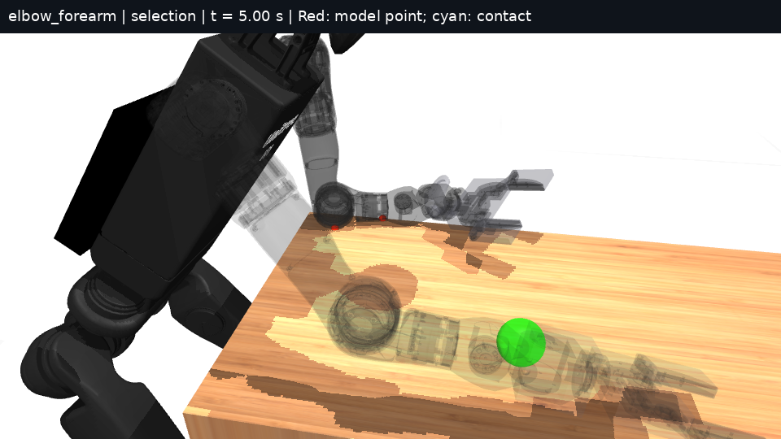
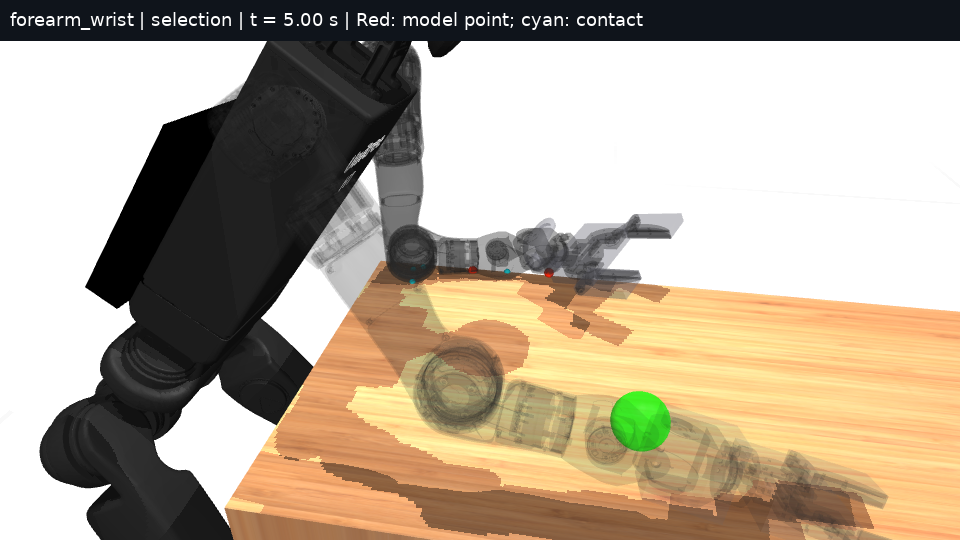
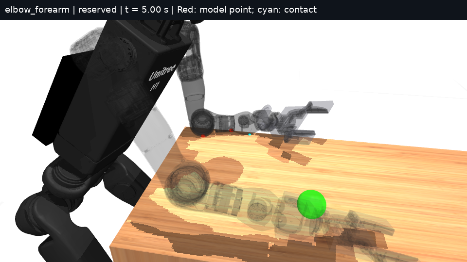
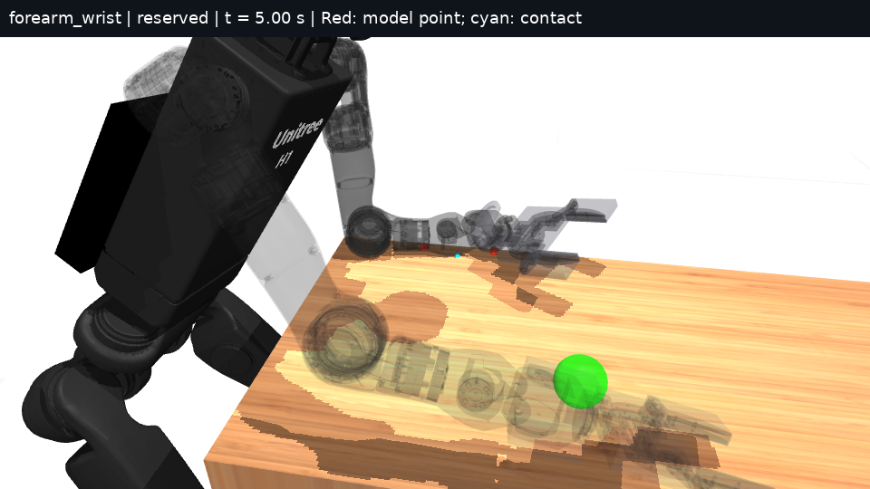

Research index · 18 October 2026 · Checkpoint complete
Geometry-corrected brace selection produces no admissible improvement in four 6.02 s rollouts. Elbow–forearm reaches 17.27 mm RMS error at the selection target; forearm–wrist reaches 28.97 mm and obtains zero support from its validated selected surfaces. Its unselected wrist-roll body instead supplies 107.89 N mean support. At the reserved target, reach differs by only 0.28 mm and both strategies again fail the force-feasibility screen. The checkpoint used five of six permitted rollouts, including the earlier wrist-geometry ablation.
Hold is 4–6 s. Reach RMS is root mean square hand-to-target distance. Credited support is the minimum summed compressive force at closed, CAD-valid witnesses on selected bodies, sampled every 20 ms. Force and moment excess are maximum positive violations of predicted cone rows over all 35 nodes at sampled hold solves. Solver p95 is the 95th percentile computation time. Slip is maximum horizontal sole speed while normal load exceeds 1 N. Displacement is the largest sole movement from episode start. Tracking is hold joint-position RMS command error. Acceleration uses 2 ms velocity differences.
The region comprises same-body collision-boundary points within 0.5 mm of CAD and 25 degrees of an incident outward triangle normal. Each witness retains its body, geom, point, normal and lever arm. No contact area or torsional capacity is inferred from the catalogue facets. Both experiments replace the wrist box with the existing CAD convex collision mesh in memory. Design poses use geometric IK from the archived design seed; controller observations use default_sense(seed=17), including its assumed 10 mm base-position error. Ground truth is confined to scoring and rendering.
Proximal forearm closure failed; the distal catalogue candidate established closed physical witnesses. Final static point-force QPs give 174.73/109.90 N elbow–forearm/forearm–wrist support. Force frames match MuJoCo within 0.318 micrometres; reconstructed table witnesses differ from the plane by at most 0.071 mm. These geometric design checks do not certify sustained loading. The wrist-yaw contact disappears in the rollouts, while wrist-roll contact supplies load. The elbow model point stays within 0.016 mm of a valid witness; the reserved forearm–wrist forearm point differs by up to 8.11 mm, equivalent to 0.81 N m error for a 100 N normal force.
Elbow–forearm is the fixed baseline. Selection uses x = 1.06 m; x = 0.98 m is reserved. Both retain y = −0.2348 m, z = 0.9982 m and table height 0.885 m. Feasibility requires reach RMS at most 30 mm, credited support at least 20 N, hold floor-contact loss at most 20 ms, and cone excess at most 1 N and 0.1 N m. The score adds reach divided by 30 mm, 20 N divided by minimum support, and the episode integral of summed squared joint speeds divided by 10 rad²/s. Thresholds are task assumptions without hardware measurements. The hypothesis requires at least 10% reserved-score improvement.
The decision was frozen before either reserved rollout: neither strategy qualifies. All plans were re-solved with identical costs and warm starts, a 35-node online horizon and 0.02 s step. Both elbow–forearm offline solves reach 200 iterations without convergence; both forearm–wrist solves converge. The latter still fails physical support and force checks during execution.
| Target x (m) | Strategy | Reach RMS (mm) | Support (N) | Force excess (N) | Moment excess (N m) | Solve p95 (ms) |
|---|---|---|---|---|---|---|
| 1.06 | elbow + forearm | 17.27 | 182.21 | 51.42 | 19.70 | 23.07 |
| 1.06 | forearm + wrist | 28.97 | 0.00 | 6.24 | 0.96 | 22.90 |
| 0.98 reserved | elbow + forearm | 24.44 | 43.90 | 75.78 | 19.65 | 22.99 |
| 0.98 reserved | forearm + wrist | 24.16 | 0.00 | 7.70 | 0.69 | 22.98 |
| Condition | Startup speed (rad/s) | Startup acceleration (rad/s²) | Wrist speed (m/s) | Tracking (mrad) | Slip (m/s) | Displacement (mm) |
|---|---|---|---|---|---|---|
| 1.06, elbow + forearm | 3.32 | 232.2 | 1.17 | 0.97 | 0.0057 | 25.87 |
| 1.06, forearm + wrist | 2.91 | 230.7 | 1.13 | 9.07 | 0.0054 | 24.81 |
| 0.98 reserved, elbow + forearm | 3.25 | 245.7 | 1.17 | 0.99 | 0.0065 | 26.29 |
| 0.98 reserved, forearm + wrist | 2.91 | 221.0 | 1.14 | 7.62 | 0.0052 | 23.46 |
No run loses loaded floor contact during the hold. Solver p95 exceeds the 20 ms period in all four runs. Runtime uses synchronous simulated execution without transport-delay compensation; this does not validate hardware deadlines. Original site memberships and certified defaults are unchanged.
Each labelled 1x video has 181 frames at 30 fps, lasting 6.033 s. Six-frame sequences and all four transparent contact scenes were inspected. Both strategies remain braced through 6 s. Red markers identify model force points; cyan markers identify MuJoCo contacts. Force attribution uses the recorded contact data.
1.06 m, elbow + forearm

1.06 m, forearm + wrist

0.98 reserved m, elbow + forearm

0.98 reserved m, forearm + wrist

This session used 148.76 s of serial numerical work across 17 guarded jobs, with peak RSS 3,071,120 KiB under 4.4 GB and CPU quota 200%, one thread on core 18. The cap follows the preceding measured 3,526,672 KiB peak times 1.3. Resguard remained at 213 events. All 37 verification checks pass. Two review assertions were corrected without a rollout retry; their failed logs remain archived. The ten-minute quota read was 47%; the final saved read was 77%.
Simulation establishes that body-specific geometry checks change which support can be credited. The tested selector has no feasible winner. Hardware validation still needs contact location and load distribution, friction/compliance, synchronized estimated base state and actuator current/torque, plus independent sole motion. These plans contain no recovery phase.
Measure the wrist-roll contact surface and its load before admitting it as a candidate, then test an estimated-contact gate that removes force from unloaded selected bodies. Preserve the reserved target and reject the correction if it cannot achieve positive support and feasible forces. This checkpoint requires no additional rollout.
Metrics and decision · Commands and resources · Raw planning archive · Earlier geometry ablation